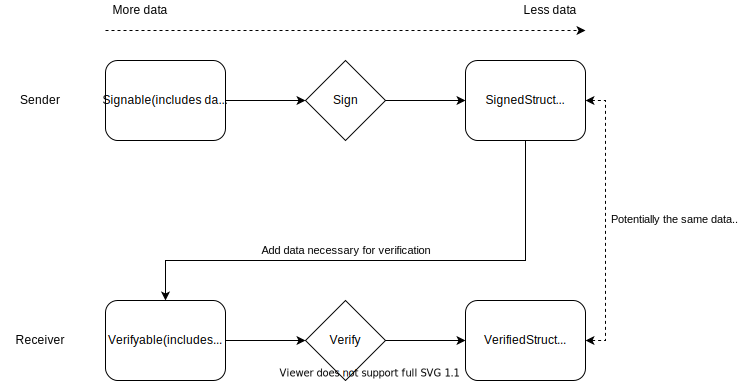

User manual
The user manual describes how to use the different parts of the OpenMLS API.
Creating an identity
Every client that wants to use OpenMLS needs to create an identity keypair initially.
Clients need to choose a few parameters to create a CredentialBundle:
identity: Vec<u8>: An octet string that uniquely identifies the client.credential_type: CredentialType: The type of the credential, e.g.CredentialType::Basic.signature_scheme: SignatureScheme: The cryptographic primitive of the identity keypair, e.g.SignatureScheme::ED25519.
let credential_bundle =
CredentialBundle::new(identity, credential_type, signature_algorithm, backend)?;
After creating the credential bundle, clients should store it in the key store so that it can be reused during group operations:
let credential = credential_bundle.credential().clone();
backend
.key_store()
.store(
&credential
.signature_key()
.tls_serialize_detached()
.expect("Error serializing signature key."),
&credential_bundle,
)
.expect("An unexpected error occurred.");
Creating key packges
Before clients can communicate with each other usind OpenMLS they need to generate key packages and publish them with the Delivery Service. Clients can generate an arbirary number of key packages ahead of time.
Clients keep the private key material corresponding to a key package locally in the key store and fetch it from there when a key package was used to add them to a new group.
Clients need to choose a few parameters to create a KeyPackageBundle:
ciphersuites: &[CiphersuiteName]: A list of ciphersuites supported by the client.extensions: Vec<Extensions>: A list of supported extensions.
Clients must specify at least one ciphersuite, and must not advertize ciphersuites they do not support.
Clients should specify all extensions they support. Mandatory extensions, like the LifetimeExtension can be specified here with specific values. If no extensions are specified, mandatory extensions are created on the fly with default values. See the documentation of extensions for more details.
// Define extensions
let extensions = vec![Extension::LifeTime(LifetimeExtension::new(
60 * 60 * 24 * 90, // Maximum lifetime of 90 days, expressed in seconds
))];
// Fetch the credential bundle from the key store
let credential_bundle = backend
.key_store()
.read(
&credential
.signature_key()
.tls_serialize_detached()
.expect("Error serializing signature key."),
)
.expect("An unexpected error occurred.");
// Create the key package bundle
let key_package_bundle =
KeyPackageBundle::new(ciphersuites, &credential_bundle, backend, extensions)?;
After creating the key package bundle, clients should store it in the key store so that it can be reused during group operations:
let key_package = key_package_bundle.key_package().clone();
// Store it in the key store
backend
.key_store()
.store(
key_package
.hash_ref(backend.crypto())
.expect("Could not hash KeyPackage.")
.value(),
&key_package_bundle,
)
.expect("An unexpected error occurred.");
Group configuration
The group configuration can be specified by building a MlsGroupConfig object or choosing the default value. The default velaue contains safe values for all parameters and is suitable for scenarios whithout particular requirements.
The following parameters can be set:
| Name | Type | Explanation |
|---|---|---|
wire_format_policy | WireFormatPolicy | Defines the wire format policy for outgoing and incoming handshake messages. |
padding_size | usize | Size of padding in bytes. The default is 0. |
max_past_epochs | usize | Maximum number of past epochs for which application messages can be decrypted. The default is 0. |
number_of_resumption_secrets | usize | Number of resumtion secrets to keep. The default is 0. |
use_ratchet_tree_extension | bool | Flag indicating the Ratchet Tree Extension should be used. The default is false. |
required_capabilities | RequiredCapabilitiesExtension | Required capabilities (extensions and proposal types). |
sender_ratchet_configuration | SenderRatchetConfiguration | Sender ratchet configuration. |
Example configuration:
let mls_group_config = MlsGroupConfig::builder()
.padding_size(100)
.sender_ratchet_configuration(SenderRatchetConfiguration::new(
10, // out_of_order_tolerance
2000, // maximum_forward_distance
))
.use_ratchet_tree_extension(true)
.build();
Creating groups
Before a group can be created, a group configuration (MlsGroupConfiguration) needs to be defined. The default values of configuration parameters are picked for safety, however be sure to check all parameters carefully to ascertain if they match your implementation's requirements. See Group configuration for more details.
In addition to the group configuration, the client should define all supported and requitred extension for the group. The negotatiation mechanism for extension in MLS consists in setting an intial list of extensions at group creation time and choosing key packages of subsequent new members accordingly.
In practice, the supported and required extensions are set by adding them to the initial KeyPackage of the creator:
// Define extensions
let extensions = vec![Extension::LifeTime(LifetimeExtension::new(
60 * 60 * 24 * 90, // Maximum lifetime of 90 days, expressed in seconds
))];
// Fetch the credential bundle from the key store
let credential_bundle = backend
.key_store()
.read(
&credential
.signature_key()
.tls_serialize_detached()
.expect("Error serializing signature key."),
)
.expect("An unexpected error occurred.");
// Create the key package bundle
let key_package_bundle =
KeyPackageBundle::new(ciphersuites, &credential_bundle, backend, extensions)?;
Every group has a unique group ID that needs to be specified at the time of the group creation. The group ID cannot be changed after the group creation and therefore remains immutable throughout the group's lifetime. It should be chosen so that it doesn't collide with any other group IDs in the same system:
let group_id = GroupId::from_slice(b"Test Group");
After that the group can be created:
let mut alice_group = MlsGroup::new(
backend,
&mls_group_config,
group_id,
alice_key_package
.hash_ref(backend.crypto())
.expect("Could not hash KeyPackage.")
.as_slice(),
)
.expect("An unexpected error occurred.");
Join a group from a Welcome message
To join a group from a Welcome message, a new MlsGroup can be instantiated directly from the Welcome message.
If the group configuration does not use the ratchet tree extension, the ratchet tree needs to be provided as well.
let mut bob_group = MlsGroup::new_from_welcome(
backend,
&mls_group_config,
welcome,
None, // We use the ratchet tree extension, so we don't provide a ratchet tree here
)
.expect("Error joining group from Welcome");
Adding members to a group
Immediate operation
Members can be added to the group atomically with the .add_members() function. The application needs to fetch the corresponding key packages from every new member from the Delivery Service first.
let (mls_message_out, welcome) = alice_group
.add_members(backend, &[bob_key_package])
.expect("Could not add members.");
The function returns the tuple (MlsMessageOut, Welcome). The MlsMessageOut contains a Commit message that needs to be fanned out to existing members of the group. The Welcome message needs to be sent to the newly added members.
Proposal
Members can also be added as a proposal (without the corresponding Commit message) by using the .propose_add_member() function:
let mls_message_out = alice_group
.propose_add_member(backend, &bob_key_package)
.expect("Could not create proposal to add Bob");
In this case the the function returns an MlsMessageOut that needs to be fanned out to existing group members.
Removing members from a group
Immediate operation
Members can be removed from the group atomically with the .remove_members() function, which takes the KeyPackageRef of group member as input. References to the KeyPackages of group members can be obtained using the .members() function, from which one can in turn compute the KeyPackageRef using their .hash_ref() function.
let (mls_message_out, welcome_option) = charlie_group
.remove_members(backend, &[bob_kp_ref])
.expect("Could not remove Bob from group.");
The function returns the tuple (MlsMessageOut, Option<Welcome>). The MlsMessageOut contains a Commit message that needs to be fanned out to existing members of the group.
Despite the fact that members were only removed in this operation, the Commit message could potentially also cover Add Proposals that were previously received in the epoch. Therefore the function can also optionally return a Welcome message. The Welcome message needs to be sent to the newly added members.
Proposal
Members can also be removed as a proposal (without the corresponding Commit message) by using the .propose_remove_member() function:
let mls_message_out = alice_group
.propose_remove_member(
backend,
charlie_group
.key_package_ref()
.expect("An unexpected error occurred."),
)
.expect("Could not create proposal to remove Charlie.");
In this case the the function returns an MlsMessageOut that needs to be fanned out to existing group members.
Getting removed from a group
A member is removed from a group if another member commits to a remove proposal targeting the member's leaf. Once the to-be-removed member merges that commit via merge_staged_commit(), all other proposals in that commit will still be applied but the group will be marked as inactive afterward. The group remains usable, e.g. to examine the membership list after the final commit was processed, but it won't be possible to create or process new messages.
if let ProcessedMessage::StagedCommitMessage(staged_commit) = bob_processed_message {
let remove_proposal = staged_commit
.remove_proposals()
.next()
.expect("An unexpected error occurred.");
// We construct a RemoveOperation enum to help us interpret the remove operation
let remove_operation = RemoveOperation::new(remove_proposal, &bob_group)
.expect("An unexpected Error occurred.");
match remove_operation {
RemoveOperation::WeLeft => unreachable!(),
// We expect this variant, since Bob was removed by Charlie
RemoveOperation::WeWereRemovedBy(member) => {
assert!(matches!(member, Sender::Member(member) if member == charlies_old_kpr));
}
RemoveOperation::TheyLeft(_) => unreachable!(),
RemoveOperation::TheyWereRemovedBy(_) => unreachable!(),
RemoveOperation::WeRemovedThem(_) => unreachable!(),
}
// Merge staged Commit
bob_group
.merge_staged_commit(*staged_commit)
.expect("Could not merge Commit.");
} else {
unreachable!("Expected a StagedCommit.");
}
// Check we didn't receive a Welcome message
assert!(welcome_option.is_none());
// Check that Bob's group is no longer active
assert!(!bob_group.is_active());
let members = bob_group.members();
assert_eq!(members.len(), 2);
assert_eq!(members[0].credential().identity(), b"Alice");
assert_eq!(members[1].credential().identity(), b"Charlie");
Updating own key package
Immediate operation
Members can update their own leaf key package atomically with the .self_update() function.
The application can optionally provide a KeyPackage manually. If not, a key package will be created on the fly with the same extensions as the current one, but with a fresh HPKE init key.
let (mls_message_out, welcome_option) = bob_group
.self_update(
backend,
None, // We don't provide a key package, it will be created on the fly instead
)
.expect("Could not update own key package.");
The function returns the tuple (MlsMessageOut, Option<Welcome>). The MlsMessageOut contains a Commit message that needs to be fanned out to existing members of the group.
Despite the fact that the member only updates its own key package in this operation, the Commit message could potentially also cover Add Proposals that were previously received in the epoch. Therefore the function can also optionally return a Welcome message. The Welcome message needs to be sent to the newly added members.
Proposal
Members can also update their key package as a proposal (without the corresponding Commit message) by using the .propose_self_update() function. Just like with the .self_update() function, an optional key package can be provided:
let mls_message_out = alice_group
.propose_self_update(
backend,
None, // We don't provide a key package, it will be created on the fly instead
)
.expect("Could not create update proposal.");
In this case the the function returns an MlsMessageOut that needs to be fanned out to existing group members.
Leaving a group
Members can indicate to the other members of the group that they wish to leave the group by using the leave_group() function, which creates a remove proposal targeting the member's own leaf. It is not possible for the member to create a Commit message that covers this proposal, as that would violate the Post-compromise Security guarantees of MLS because the member would know the epoch secrets of the next epoch.
let queued_message = bob_group
.leave_group(backend)
.expect("Could not leave group");
After successfully sending the proposal to the DS for fanout, there is still the possibility that the remove proposal is not covered in the following commit. The member leaving the group thus has two options:
- tear down the local group state and ignore all subsequent messages for that group, or
- wait for the commit to come through and process it (see also Getting Removed).
For details on how to create Remove Proposals, see Removing members from a group.
Creating application messages
Application messages are created from byte slices with the .create_message() function:
let message_alice = b"Hi, I'm Alice!";
let mls_message_out = alice_group
.create_message(backend, message_alice)
.expect("Error creating application message.");
Note that the theoretical maximum length of application messages is 2^32 bytes, however in practice messages should be much shorter unless the Delivery Service can cope with very long messages.
The function returns an MlsMessageOut that needs to be sent to the Delivery Service for fanout to other members of the group. To guarantee the best possible Forward Secrecy, the key material used to encrypt messages is immediately discarded after encryption. This means that the message author cannot decrypt application messages. If access to the messages content is required after creating the message, a copy of the plaintext message should be kept by the application.
Committing to pending proposals
During an epoch, members can create proposals that are not immediately committed. These proposals are called "pending proposals". They will automatically be covered by any operation that creates a Commit message (like .add_members(), .remove_members(), etc.).
Some operations, (like creating application messages) are not allowed as long as pending proposals exist for the current epoch. In that case, the application needs to first commit to the pending proposals by creating a Commit message that covers these proposals. This can be done with the commit_to_pending_proposals() function:
let (mls_message_out, welcome_option) = alice_group
.commit_to_pending_proposals(backend)
.expect("Could not commit to pending proposals.");
The function returns the tuple (MlsMessageOut, Option<Welcome>). The MlsMessageOut contains a Commit message that needs to be fanned out to existing members of the group.
In case the Commit message also covers Add Proposals that were previously received in the epoch, a Welcome message is required to invite the new members. Therefore the function can also optionally return a Welcome message. The Welcome message needs to be sent to the newly added members.
Processing incoming messages
Processing incoming messages happens in different phases:
Deserializing messages
Incoming messages can be deserialized from byte slices into an MlsMessageIn:
let mls_message_in =
MlsMessageIn::try_from_bytes(&bytes).expect("Could not deserialize message.");
If the message is malformed, the function will fail with an error.
Parsing messages
In the next step, the incoming message needs to be parsed. If the message was encrypted, it will be decrypted automatically:
let unverified_message = bob_group
.parse_message(mls_message_in, backend)
.expect("Could not parse message.");
Parsing can fail, if e.g. dercrypting the message fails. The exact reason for failure is returned in the error.
Processing messages
In the next step the unverified message needs to be processed. This step performs all remaining validity checks and also verifies the message's signature. Optionally, a signature key can be provided to verify the message's signature. This can be used when processing external messages. By default, the sender's credential is used to verify the signature.
let processed_message = bob_group
.process_unverified_message(
unverified_message,
None, // No external signature key
backend,
)
.expect("Could not process unverified message.");
Interpreting the processed message
In the last step, the message is ready for inspection. There are 3 different kinds of messages:
Application messages
Application messages simply return the original byte slice:
if let ProcessedMessage::ApplicationMessage(application_message) = processed_message {
// Check the message
assert_eq!(application_message.into_bytes(), b"Hi, I'm Alice!");
}
Proposals
Standalone proposals are returned as a QueuedProposal, indicating the fact that they are pending proposals. The actual proposal can be inspected through the .proposal() function. After inspection, applications should store the pending proposal in the proposal store of the group:
if let ProcessedMessage::ProposalMessage(staged_proposal) = charlie_processed_message {
// In the case we received an Add Proposal
if let Proposal::Add(add_proposal) = staged_proposal.proposal() {
// Check that Bob was added
assert_eq!(add_proposal.key_package().credential(), &bob_credential);
} else {
panic!("Expected an AddProposal.");
}
// Check that Alice added Bob
assert!(matches!(
staged_proposal.sender(),
Sender::Member(member) if member == alice_group
.key_package_ref()
.expect("An unexpected error occurred.")
));
// Store proposal
charlie_group.store_pending_proposal(*staged_proposal);
}
Commit messages
Commit messages are returned as StagedCommit objects. The proposals they cover can be inspected through different functions, depending on the proposal type. For more details see the StagedCommit documentation. After the application has inspected the StagedCommit and approved all the proposals it covers, the StagedCommit can be merged in the current group state by calling the .merge_staged_commit() function.
if let ProcessedMessage::StagedCommitMessage(staged_commit) = alice_processed_message {
// We expect a remove proposal
let remove = staged_commit
.remove_proposals()
.next()
.expect("Expected a proposal.");
// Check that Bob was removed
assert_eq!(
remove.remove_proposal().removed(),
bob_group
.key_package_ref()
.expect("An unexpected error occurred.")
);
// Check that Charlie removed Bob
assert!(matches!(
remove.sender(),
Sender::Member(member) if member == &charlies_old_kpr
));
// Merge staged commit
alice_group
.merge_staged_commit(*staged_commit)
.expect("Could not merge Commit.");
}
Interpreting remove operations
Remove operations can have different meanings, such as:
- We left the group (by our own wish)
- We were removed from the group (by another member or a pre-configured sender)
- We removed another member from the group
- Another member left the group (by its own wish)
- Another member was removed from the group (by a member or a pre-configured sender, but not by us)
Since all remove operations only appear as a QueuedRemoveProposal, the RemoveOperation enum can be constructed from the remove proposal and the current group state to refelect the different scenarios listed above.
if let ProcessedMessage::StagedCommitMessage(staged_commit) = bob_processed_message {
let remove_proposal = staged_commit
.remove_proposals()
.next()
.expect("An unexpected error occurred.");
// We construct a RemoveOperation enum to help us interpret the remove operation
let remove_operation = RemoveOperation::new(remove_proposal, &bob_group)
.expect("An unexpected Error occurred.");
match remove_operation {
RemoveOperation::WeLeft => unreachable!(),
// We expect this variant, since Bob was removed by Charlie
RemoveOperation::WeWereRemovedBy(member) => {
assert!(matches!(member, Sender::Member(member) if member == charlies_old_kpr));
}
RemoveOperation::TheyLeft(_) => unreachable!(),
RemoveOperation::TheyWereRemovedBy(_) => unreachable!(),
RemoveOperation::WeRemovedThem(_) => unreachable!(),
}
// Merge staged Commit
bob_group
.merge_staged_commit(*staged_commit)
.expect("Could not merge Commit.");
} else {
unreachable!("Expected a StagedCommit.");
}
Traits & External Types
OpenMLS defines a number of traits that have to be implemented in order to use OpenMLS.
Using the key store
The key store is probably one of the most interesting traits because applications that use OpenMLS will interact with it. See the OpenMlsKeyStore trait description for details but note that the key used to store, read, and delete values in the key store has to be provided as a byte slice.
In the following examples we have a ciphersuite and a backend (OpenMlsCryptoProvider).
CredentialType::Basic,
SignatureScheme::from(ciphersuite),
backend,
)
.unwrap();
let key_package_bundle =
KeyPackageBundle::new(&[ciphersuite], &credential_bundle, backend, vec![])
.expect("Error generating new key package bundle.");
// In order to store something in the key store we need to define an ID.
// Here we simply take the key package reference.
let id = key_package_bundle
.key_package()
.hash_ref(backend.crypto())
.expect("Failed to hash KeyPackage.");
// Now we can store the key_package_bundle.
backend
.key_store()
.store(id.as_slice(), &key_package_bundle)
.expect("Failed to store key package bundle in keystore.");
// Delete the key package bundle.
In order to delete a value the delete is called with the identifier.
.expect("Error deleting key package bundle");
}
#[apply(ciphersuites_and_backends)]
Retrieving a value from the key store is as simple as calling read.
In this example we assume that we got a credential where we want to retrieve
the credential bundle for, i.e. the private key material.
let credential_bundle: CredentialBundle = backend
.key_store()
.read(&id)
.expect("Error retrieving the credential bundle");
assert_eq!(credential_bundle, credential_bundle_to_store);
}
OpenMLS Traits
The OpenMLS project provides two default implementations for these traits
⚠️☣️ These traits are responsible for all cryptographic operations and randomness within OpenMLS. Please ensure you know what you're doing when implementing your own versions.
The Traits
There are 4 different traits defined in the OpenMLS traits crate.
OpenMlsRand
This trait defines two functions to generate arrays and vectors, and is used by OpenMLS to generate randomness.
pub trait OpenMlsRand {
type Error: Debug + Clone + PartialEq + Into<String>;
/// Fill an array with random bytes.
fn random_array<const N: usize>(&self) -> Result<[u8; N], Self::Error>;
/// Fill a vector of length `len` with bytes.
fn random_vec(&self, len: usize) -> Result<Vec<u8>, Self::Error>;
}
OpenMlsCrypto
This trait defines all cryptographic functions required by OpenMLS, in particular
- HKDF
- Hashing
- AEAD
- Signatures
- HPKE
pub trait OpenMlsCrypto {
OpenMlsKeyStore
This trait defines a CRUD API for a key store that is used to store long-term key material from OpenMLS.
The key store provides functions to store, read and delete values.
Note that it does not allow to update values.
Instead entries must be deleted and newly stored.
/// The Key Store trait
pub trait OpenMlsKeyStore: Send + Sync {
/// The error type returned by the [`OpenMlsKeyStore`].
type Error: Debug + Clone + PartialEq + Into<String>;
/// Store a value `v` that implements the [`ToKeyStoreValue`] trait for
/// serialization for ID `k`.
///
/// Returns an error if storing fails.
fn store<V: ToKeyStoreValue>(&self, k: &[u8], v: &V) -> Result<(), Self::Error>
where
Self: Sized;
/// Read and return a value stored for ID `k` that implements the
/// [`FromKeyStoreValue`] trait for deserialization.
///
/// Returns [`None`] if no value is stored for `k` or reading fails.
fn read<V: FromKeyStoreValue>(&self, k: &[u8]) -> Option<V>
where
Self: Sized;
/// Delete a value stored for ID `k`.
///
/// Returns an error if storing fails.
fn delete(&self, k: &[u8]) -> Result<(), Self::Error>;
}
OpenMlsCryptoProvider
Additionally, there's a wrapper trait defined that is expected to be passed into the public OpenMLS API.
pub trait OpenMlsCryptoProvider: Send + Sync {
type CryptoProvider: crypto::OpenMlsCrypto;
type RandProvider: random::OpenMlsRand;
type KeyStoreProvider: key_store::OpenMlsKeyStore;
/// Get the crypto provider.
fn crypto(&self) -> &Self::CryptoProvider;
/// Get the randomness provider.
fn rand(&self) -> &Self::RandProvider;
/// Get the key store provider.
fn key_store(&self) -> &Self::KeyStoreProvider;
}
External Types
For interoperability this crate also defines a number of types and algorithm identifiers.
AEADs
The following AEADs are defined.
pub enum AeadType {
/// AES GCM 128
Aes128Gcm = 0x0001,
/// AES GCM 256
Aes256Gcm = 0x0002,
/// ChaCha20 Poly1305
ChaCha20Poly1305 = 0x0003,
}
An AEAD provides the following functions to get the according values for each algorithm.
tag_sizekey_sizenonce_size
Hashing
The following hash algorithms are defined.
pub enum HashType {
Sha2_256 = 0x04,
Sha2_384 = 0x05,
Sha2_512 = 0x06,
}
An hash algorithm provides the following functions to get the according values for each algorithm.
size
Signatures
The following signature schemes are defined.
pub enum SignatureScheme {
/// ECDSA_SECP256R1_SHA256
ECDSA_SECP256R1_SHA256 = 0x0403,
/// ECDSA_SECP384R1_SHA384
ECDSA_SECP384R1_SHA384 = 0x0503,
/// ECDSA_SECP521R1_SHA512
ECDSA_SECP521R1_SHA512 = 0x0603,
/// ED25519
ED25519 = 0x0807,
/// ED448
ED448 = 0x0808,
}
HPKE Types
The HPKE implementation is part of the crypto provider as well. The crate therefore defines the necessary types too.
The HPKE algorithms are defined as follows.
#[repr(u16)]
pub enum HpkeKemType {
/// DH KEM on P256
DhKemP256 = 0x0010,
/// DH KEM on P384
DhKemP384 = 0x0011,
/// DH KEM on P521
DhKemP521 = 0x0012,
/// DH KEM on x25519
DhKem25519 = 0x0020,
/// DH KEM on x448
DhKem448 = 0x0021,
#[repr(u16)]
pub enum HpkeKdfType {
/// HKDF SHA 256
HkdfSha256 = 0x0001,
/// HKDF SHA 384
HkdfSha384 = 0x0002,
/// HKDF SHA 512
HkdfSha512 = 0x0003,
#[repr(u16)]
pub enum HpkeAeadType {
/// AES GCM 128
AesGcm128 = 0x0001,
/// AES GCM 256
AesGcm256 = 0x0002,
/// ChaCha20 Poly1305
ChaCha20Poly1305 = 0x0003,
/// Export-only
Export = 0xFFFF,
In addition helper structs for HpkeCiphertext and HpkeKeyPair are defined.
)]
pub struct HpkeCiphertext {
pub kem_output: TlsByteVecU16,
pub ciphertext: TlsByteVecU16,
#[derive(Debug, Clone)]
pub struct HpkeKeyPair {
pub private: Vec<u8>,
pub public: Vec<u8>,
Message Validation
Validation steps
- Syntax validation: This should be mostly covered by the decoding
- Semantic validation: Checks to make sure a message is valid in a given context (signature verification, epoch number check, etc.)
- Group policy validation: checks about handshake type, etc.
- AS/policy validation: Checks to see whether syntactically and semantically correct messages should be adopted or dropped (Is a member allowed to add another member? Is a member allowed to remove another member?)
Detailed list of validation steps
Semantic validation of message framing
| ValidationStep | Description | Implemented | Tested | Test File |
|---|---|---|---|---|
ValSem001 | Wire format | ✅ | ✅ | openmls/src/group/tests/test_framing_validation.rs |
ValSem002 | Group id | ✅ | ✅ | openmls/src/group/tests/test_framing_validation.rs |
ValSem003 | Epoch | ✅ | ✅ | openmls/src/group/tests/test_framing_validation.rs |
ValSem004 | Sender: Member: check the sender points to a non-blank leaf | ✅ | ✅ | openmls/src/group/tests/test_framing_validation.rs |
ValSem005 | Application messages must use ciphertext | ✅ | ✅ | openmls/src/group/tests/test_framing_validation.rs |
ValSem006 | Ciphertext: decryption needs to work | ✅ | ✅ | openmls/src/group/tests/test_framing_validation.rs |
ValSem007 | Membership tag presence | ✅ | ✅ | openmls/src/group/tests/test_framing_validation.rs |
ValSem008 | Membership tag verification | ✅ | ✅ | openmls/src/group/tests/test_framing_validation.rs |
ValSem009 | Confirmation tag presence | ✅ | ✅ | openmls/src/group/tests/test_framing_validation.rs |
ValSem010 | Signature verification | ✅ | ✅ | openmls/src/group/tests/test_framing_validation.rs |
Semantic validation of proposals covered by a Commit
| ValidationStep | Description | Implemented | Tested | Test File |
|---|---|---|---|---|
ValSem100 | Add Proposal: Identity in proposals must be unique among proposals | ✅ | ✅ | openmls/src/group/tests/test_proposal_validation.rs |
ValSem101 | Add Proposal: Signature public key in proposals must be unique among proposals | ✅ | ✅ | openmls/src/group/tests/test_proposal_validation.rs |
ValSem102 | Add Proposal: HPKE init key in proposals must be unique among proposals | ✅ | ✅ | openmls/src/group/tests/test_proposal_validation.rs |
ValSem103 | Add Proposal: Identity in proposals must be unique among existing group members | ✅ | ✅ | openmls/src/group/tests/test_proposal_validation.rs |
ValSem104 | Add Proposal: Signature public key in proposals must be unique among existing group members | ✅ | ✅ | openmls/src/group/tests/test_proposal_validation.rs |
ValSem105 | Add Proposal: HPKE init key in proposals must be unique among existing group members | ✅ | ✅ | openmls/src/group/tests/test_proposal_validation.rs |
ValSem106 | Add Proposal: required capabilities | ✅ | ✅ | openmls/src/group/tests/test_proposal_validation.rs |
ValSem107 | Remove Proposal: Removed member must be unique among proposals | ✅ | ✅ | openmls/src/group/tests/test_proposal_validation.rs |
ValSem108 | Remove Proposal: Removed member must be an existing group member | ✅ | ✅ | openmls/src/group/tests/test_proposal_validation.rs |
ValSem109 | Update Proposal: Identity must be unchanged between existing member and new proposal | ✅ | ✅ | openmls/src/group/tests/test_proposal_validation.rs |
ValSem110 | Update Proposal: HPKE init key must be unique among existing members | ✅ | ✅ | openmls/src/group/tests/test_proposal_validation.rs |
ValSem111 | Update Proposal: The sender of a full Commit must not include own update proposals | ✅ | ✅ | openmls/src/group/tests/test_proposal_validation.rs |
ValSem112 | Update Proposal: The sender of a standalone update proposal must be of type member | ✅ | ✅ | openmls/src/group/tests/test_proposal_validation.rs |
Commit message validation
| ValidationStep | Description | Implemented | Tested | Test File |
|---|---|---|---|---|
ValSem200 | Commit must not cover inline self Remove proposal | ✅ | ✅ | openmls/src/group/tests/test_commit_validation.rs |
ValSem201 | Path must be present, if Commit contains Removes or Updates | ✅ | ✅ | openmls/src/group/tests/test_commit_validation.rs |
ValSem202 | Path must be the right length | ✅ | ✅ | openmls/src/group/tests/test_commit_validation.rs |
ValSem203 | Path secrets must decrypt correctly | ✅ | ✅ | openmls/src/group/tests/test_commit_validation.rs |
ValSem204 | Public keys from Path must be verified and match the private keys from the direct path | ✅ | ✅ | openmls/src/group/tests/test_commit_validation.rs |
ValSem205 | Confirmation tag must be successfully verified | ✅ | ✅ | openmls/src/group/tests/test_commit_validation.rs |
External Commit message validation
| ValidationStep | Description | Implemented | Tested | Test File |
|---|---|---|---|---|
ValSem240 | External Commit must cover at least one inline ExternalInit proposal | ✅ | ✅ | openmls/src/group/tests/test_external_commit_validation.rs |
ValSem241 | External Commit must cover at most one inline ExternalInit proposal | ✅ | ✅ | openmls/src/group/tests/test_external_commit_validation.rs |
ValSem242 | External Commit must not cover any inline Add proposals | ✅ | ✅ | openmls/src/group/tests/test_external_commit_validation.rs |
ValSem243 | External Commit must not cover any inline Update proposals | ✅ | ✅ | openmls/src/group/tests/test_external_commit_validation.rs |
ValSem244 | Identity of inline Remove proposal target and external committer must be the same | ✅ | ✅ | openmls/src/group/tests/test_external_commit_validation.rs |
ValSem245 | External Commit must not cover any ExternalInit proposals by reference | ✅ | ✅ | openmls/src/group/tests/test_external_commit_validation.rs |
ValSem246 | External Commit must contain a path | ✅ | ✅ | openmls/src/group/tests/test_external_commit_validation.rs |
ValSem247 | External Commit signature must be verified using the credential in the path KeyPackage | ✅ | ✅ | openmls/src/group/tests/test_external_commit_validation.rs |
Tree Rewrite Project

TreeSync
TreeSync is a tree structure that keeps public data in a left-balanced binary tree structure and relies on a KeyStore to store private data. Not every node has to contain data. A node not containing data is considered blank. The TreeSyncNode API determines how TreeSync interacts with the data it stores.

Node Indexing
The current MLS spec explicitly relies on leaf- or node indices specific to the array-representation of a tree to indicate individual nodes. Thus, to keep it simple, this draft of a TreeSync API relies on the same indices.
In an actual implementation, we might have to translate from the array-specific
indices to whatever is used by the actual binary tree implementation underneath
TreeSync.
TreeSyncNode API
TreeSync relies on the TreeSyncNode to represent the layer of abstraction
below it.
#![allow(unused)] fn main() { trait TreeSyncNode { /// Return the value of the node relevant for the parent hash and tree hash. /// In case of MLS, this would be the node's HPKEPublicKey. TreeSync /// can then gather everything necessary to build the `ParentHashInput`, /// `LeafNodeHashInput` and `ParentNodeTreeHashInput` structs for a given node. fn node_content(&self) -> &[u8] {} /// Get the list of unmerged leaves. fn unmerged_leaves(&self) -> &[LeafIndex] {} /// Clear the list of unmerged leaves. fn clear_unmerged_leaves(&mut self) {} /// Add a `LeafIndex` to the node's list of unmerged leaves. fn add_unmerged_leaf(&mut self, LeafIndex) {} /// Set the parent hash value of this node. fn set_parent_hash(&mut self, Vec<u8>) {} /// Get the parent hash value of this node. fn parent_hash(&self) -> &[u8] {} /// Set the tree hash value for the given node. /// This assuming that the node caches the tree hash. fn set_tree_hash(&mut self, Vec<u8>) {} /// Get the tree hash value for the given node. fn tree_hash(&self) -> &[u8] {} /// Verify the signature on a given leaf node. Returns an /// error if called on a non-leaf node. fn verify(&self) -> Result<bool, TreeSyncNodeError> {} } }
TreeSync API
Note, that a majority of the tree operations are performed on TreeSyncDiffs (see below).
#![allow(unused)] fn main() { struct TreeSync<Node: TreeSyncNode, KeyStore: TreeSyncKeyStore> { FLBBinaryTree<Option<Node>> } impl<Node: TreeSyncNode, KeyStore: TreeSyncKeyStore> TreeSync<Node, KeyStore> { /// Return the tree hash of the root node. fn tree_hash(&self) -> Vec<u8> {} /// Verify the parent hash of every parent node in the tree. fn verify_parent_hashes -> Result<(), TreeSyncError> {} /// Merge the given diff into the `TreeSync` instance. This operation /// re-computes all necessary tree hashes. /// Note, that the private values corresponding to the ones in the /// TreeSync should be committed at the same time. fn merge_diff(&mut self, tree_sync_diff: TreeSyncDiff) -> Result<(), TreeSyncError> {} /// Create an empty diff based on this TreeSync instance all operations /// are created based on an initial, empty diff. fn empty_diff(&self) -> TreeSyncDiff {} } }
TreeSyncDiffs
#![allow(unused)] fn main() { struct<Node: TreeSyncNode> TreeSyncDiff<Node> { nodes: HashMap<NodeIndex,Option<Node>>, } impl<Node: TreeSyncNode, KeyStore: TreeSyncKeyStore> TreeSyncDiff<Node> { /// Update a leaf node and blank the nodes in the updated leaf's direct path. fn update_leaf(&mut self, leaf_node: Node, leaf_index: LeafIndex) -> TreeSyncDiff {} /// Adds a new leaf to the tree either by filling a blank leaf or by creating a new leaf, /// inserting intermediate blanks as necessary. This also adds the leaf_index of the new /// leaf to the `unmerged_leaves` state of the parent nodes in its direct path. fn add_leaf(&mut self, leaf_node: Node) -> Result<TreeSyncDiff, TreeSyncError> {} /// Remove a group member by blanking the target leaf and its direct path. fn remove_leaf(&mut self, leaf_index: LeafIndex) -> Result<TreeSyncDiff, TreeSyncError> {} /// Process a given update path, consisting of a vector of `Node`. This /// function /// * replaces the nodes in the direct path of the given `leaf_node` with the /// the ones in `path` and /// * computes the `parent_hash` of all nodes in the path and compares it to the one in /// the `leaf_node`. fn update_path(&mut self, leaf_node: Node, path: Vec<Node>) -> TreeSyncDiff {} /// Compute the tree hash of the TreeSync instance we would get when merging the diff. fn tree_hash(&self) -> Vec<u8> {} } }
TreeSync Usage Example
#![allow(unused)] fn main() { /// This function demonstrates how TreeSync could be used to manage a tree and could be /// used in create_commit to create a provisional tree and the /// corresponding values (tree_hash, commit_secret, etc). /// It returns the diff resulting from the operations applied to the TreeSync instance, /// as well as the vector of `NodeSeed`s that can then be encrypted using TreeKEM. /// Note, that the application with apply_commit is slightly asymmetrical, as we would potentially have /// to pass in an additional `path` for TreeSync to apply. fn apply_proposals(&self, key_store: &KeyStore, proposal_list: Vec<Proposal>) -> Result<(TreeSyncDiff), ApplyProposalsError>{ // ... // as Proposals are not generic, we have to translate them // individually to TreeSync operations // the assumption here is that the list of proposals is already // ordered by type and order as per commit let mut path_required = false; let mut my_new_key_package = None; let mut diff = self.tree_sync.empty_diff(); for proposal in &proposal_list { match proposal { Update(key_package) => { // If we process an update, we need to include a path in the end path_required = true; // We process self updates later using the update_path function if key_package.identity() != &self.identity { diff.update_leaf(key_package.into()) } else { my_new_key_package = Some(key_package) } }, Add(key_package) => diff.add(TreeSyncNode::from(key_package)), // It's not clear yet how to expose "identity" to TreeSync. Remove(leaf_index) => { // If we process a remove, we need to include a path in the end path_required = true; diff.remove(leaf_index), } }; } // If we want to create a path and/or one of the updates was a // self-update. if path_required || my_new_key_package.is_some() { // a path is required, but there's no explicit update, generate a new key_package if my_new_key_package.is_none() { my_new_key_package = key_store.generate_key_package_bundle(...); } // We assume that this function gives us the path based on the leaf_secret of the // key package bundle, which is in the key store. let (path, path_secrets) = create_path(&key_store, &my_new_key_package)?; // The private values generated in the process are put into the key store // This will compute the path secret and set it in the new leaf node. diff.update_path(TreeSyncLeafNode(my_new_key_package.unwrap()), path)?; } else { diff } // We can now call TreeKEM and encrypt the `path_secrets` (see below). } }
TreeKEM Trait
TreeKEM would take one of the "node seed" discussed above and encrypt/decrypt
it. For encryption/decryption it would need access to a TreeSync instance, where
Node implements TreeKemNode, which in turn provides the functions that
TreeKEM needs. In particular, it would have to provide access to the public keys
of each node.
#![allow(unused)] fn main() { trait TreeKemNode<KeyStore: TreeSyncKeyStore> { /// Encrypt a given plaintext to the node's public key. fn encrypt(&self, plaintext: &[u8]) -> HpkeCiphertext {} /// Decrypt a given ciphertext using the secret key corresponding to the node. fn decrypt(&self, key_store: &KeyStore, ciphertext: &HpkeCiphertext) -> Vec<u8> {} } trait<KeyStore: TreeSyncKeyStore> TreeKem<KeyStore> { /// Create an UpdatePath by encrypting a vector of `NodeSeed`s /// to the direct path of our own leaf. fn encrypt_path(&self, path: Vec<NodeSeed>) -> Result<UpdatePath, TreeKemError> {} /// Decrypt an UpdatePath, returning the `NodeSeed` and the vector of `Node`s. fn decrypt_path(&self, key_store: KeyStore, update_path: UpdatePath) -> Result<(NodeSeed, Vec<Node>), TreeKemError> {} } }
Questions:
- Should we allow TreeKEM to know about KeyPackages or do we draw the abstraction line at public keys? It needs to know about KeyPackages to be able to return an UpdatePath. Otherwise it would be a vector of UpdatePathNode.
TODO: Create a KeyStore API for TreeKem. See https://github.com/franziskuskiefer/key-store-rs/blob/main/src/traits.rs
KeyStore API (old API for TreeSync)
TreeSync requires a place in which to store secrets and private keys. In particular, it should store:
- Pairs of
(PrivateState, NodeSeed)indexed byPrivateStateHandlefor updates to one's own leaf node. These are independent of a given group and get consumed when used. - A
NodeSeed, which represents theCommitSecretin MLS-terms. - A number of
PrivateState, representing the private values of the nodes in one's own direct path, indexed by Node indices. This includes thePrivateStateof the leaf. - A temporary
Vec<PrivateState>, for the private part of a provisional TreeSync state. - A temporary
NodeSeed, for the private part of a provisional TreeSync state.
The individual get and erase functions allow the persistence of derivations of
the NodeSeed before deleting it.
#![allow(unused)] fn main() { trait TreeSyncKeyStore<Node: TreeSyncNode> { /// Store a pair of `Node::NodeSeed` and `Node::PrivateState` corresponding to a /// `Node` meant to be used as a leaf node in a future update. Note, that /// the `Node::NodeSeed` will only be used if we commit the update ourselves. fn store_leaf_node_private_state(&mut self, node_seed: Node::NodeSeed, private_values: Node::PrivateState) {} /// Take a pair of `Node::NodeSeed` and `Node::PrivateState` corresponding to a /// `Node::PrivatStateHandle`, thereby removing it from the store. fn take_leaf_node_private_state(&mut self, handle: Node::PrivateStateHandle) -> Result<(Node::NodeSeed, Node:: PrivateState), KeyStoreError> {} /// Store the temporary `Vec<Node::PrivateState>` and `Node::NodeSeed`. fn store_temporary_private_states(&mut self, private_values: (Vec<Node::PrivateState>, Node::NodeSeed)) {} /// Commit to the current temporary `Vec<Node::PrivateState>` and `Node::NodeSeed` /// by using it to overwrite the corresponding non-temporary values. fn commit_to_temporary_values(&mut self) {} /// Get the `Node::NodeSeed`. Note, that it should be removed using /// `erase_node_seed` after it was used. fn node_seed(&self) -> Node::NodeSeed {} /// Get the `Node::NodeSeed`. Note, that it should be removed using /// `erase_node_seed` after it was used. fn erase_node_seed(&mut self) {} } }
Binary Tree API
TreeSync, TreeKEM and TreeDEM rely on an underlying full, left-balenced
binary tree representation FLBBinaryTree to organise its data and to process
it.
As discussed above, the following binary tree API relies on the indices of an array-based binary tree representation. While the binary tree implementation needs to provide an interface based on these indices, it does not necessarily need to organise the data in memory in the style of the array-representation.
#![allow(unused)] fn main() { trait FLBBinaryTree<Node> { /// Obtain a reference to the data contained in the `Node` at index `node_index`. /// Returns an error if the index is outside of the tree. fn node(&self, node_index: NodeIndex) -> Result<&Node, FLBBBinaryTreeError> {} /// Obtain a mutable reference to the data contained in the `Node` at index `node_index`. /// Returns an error if the index is outside of the tree. fn node_mut(&mut self, node_index: NodeIndex) -> Result<&mut Node, FLBBBinaryTreeError> {} /// Add two nodes to the right side of the tree. Nodes can only be /// added in pairs to keep the tree full. fn add(&mut self, node_1:Node , node_2: Node) -> Result<(), FLBBBinaryTreeError> {} /// Remove the two rightmost nodes of the tree. fn remove(&mut self) -> Result<(), FLBBBinaryTreeError> {} } }
Open Questions/TODOs:
-
What's the
BinaryTreeAPI? (FK)- Added a secion on full, left-balanced BinaryTree API. It leaves a lot of
functionality in
TreeSync, but it keeps the interface simple and small.
- Added a secion on full, left-balanced BinaryTree API. It leaves a lot of
functionality in
-
How do diffs work with the key store? (FK)
- There's now a TreeSync specific KeyStore API that includes temporary values.
- Write an example of what kind of secrets we want to store and when, as well as what kind of secrets we want to delete and when.
- Store secrets based on group + epoch.
- Implement CRUD interface.
-
What's the most efficient data structure for
TreeSyncDiff? (FK)- If it's a vector, the elements should get a struct.
- Initial idea is to make it a
HashMap<NodeIndex,TreeSyncNode>
- Does any of these structs need internal mutability? (FK)
- Should there be shared functionality for diffs? (FK)
-
TreeSyncshould have a cache for hashes. (FK)- The current design requires the underlying nodes to do the hashing. Not sure if that's the optimal approach.
- Design API for TreeDEM
-
Rework Diff types to be abstract and independent of the binary tree implementation
- We have the same argument here as for MLS. We need some way to address individual nodes and we use indices from the array-based representation for that. As long as the underlying binary tree maps that to the underlying memory model, it should work fine.
- Do we want persistence for diffs?
Type-Enforced Verification
We use Rust's type checker to achieve additional security guarantees regarding the signing and verification of structs. There are four traits:
Signable: A payload that the sender/signer of a message can create. The trait provides asignfunction that produces aSignedStruct.SignedStruct: The result of signing aSignablestruct. This struct can actually be encoded and sent over the wire. TheSignedStructdoes not necessarily contain all the information required to sign or verify the struct.Verifiable: A payload, potentially received from the wire with a signature and all information required to verify the struct. When receiving aSignedStruct, the receiver can add additional information required to make the struct verifiable. Provides averifyfunction.VerifiedStruct: The result of calling theverifyfunction on aVerifiablestruct. TheVerifiedStructis what is accepted by further processing functions on the receiving side.

Performance
How does OpenMLS (and MLS in general) perform in different settings?
Performance measurements are implemented here and can be run with cargo bench --bench group.
Make sure that check in the code which scenarios and group sizes are enabled.
OpenMLS Performance Spreadsheet
Real World Scenarios
Stable group
Many private groups follow this model
- Group is created by user P1
- P1 invites a set of N other users
- The group is used for messaging between the N+1 members
- Every X messages one user in the group sends an update
Somewhat stable group
This can model a company or team wide group where regularly but infrequently users are added and users leave
- Group is created by user P1
- P1 invites a set of N other users
- The group is used for messaging between the members
- Every X messages one user in the group sends an update
- Every Y messages Q users are added
- Every Z messages R users are removed
High fluctuation group
This models public groups where users frequently join and leave. Real-time scenarios such as gather.town are an example of high fluctuation groups. It is the same scenario as the somewhat stable group but with a very small Y, Z.
Extreme Scenarios
In addition to the three scenarios above extreme and corner cases are interesting.
Every second leave is blank
Only every second leave in the tree is non-blank.
Use Case Scenarios
A collection of common use cases/flows.
Long-time offline device
If a device has been offline for a while, it has to process a large number of application and protocol messages.
Tree scenarios
In addition the scenarios above it is interesting to look at the same scenario but with different states of the tree. For example, take the stable group with N members messaging each other. How is the performance different between a message sent right after group setup, i.e. each member only joined the group without other messages being sent, and a tree where every member has sent an update before the message?
Measurements
- Group creation
- create group
- create proposals
- create welcome
- apply commit
- Join group
- create group from welcome
- Send application message
- Receive application message
- Send update
- create proposal
- create commit
- apply commit
- Receive update
- apply commit
- Add user sender
- create proposal
- create welcome
- apply commit
- Existing user getting an add
- apply commit
- Remove user sender
- create proposal
- create commit
- apply commit
- Existing user getting a remove
- apply commit
Forward Secrecy
To achieve forward secrecy, OpenMLS drops key material immediately after a given
key is no longer required by the protocol. For some keys this is simple, as they
are used only once and there is no need to store them for later use. However,
for other keys, the time of deletion is a result of a trade-off between
functionality and forward secrecy. For example, it can be desirable to keep the
SecretTree of past epochs for a while to allow decryption of straggling
application messages sent in previous epochs.
In this chapter, we detail how we achieve forward secrecy for the different types of keys used throughout MLS.
Ratchet Tree
The ratchet tree contains the secret key material of the client's leaf, as well (potentially) that of nodes in its direct path. The secrets in the tree are changed in the same way as the tree itself: via the merge of a previously prepared diff.
Commit Creation
Upon the creation of a commit, any fresh key material introduced by the committer is stored in the diff. It exists alongside the key material of the ratchet tree before the commit until the client merges the diff, upon which the key material in the original ratchet tree is dropped.
Commit Processing
Upon receiving a commit from another group member, the client processes the
commit until they have a StagedCommit, which in turn contains a ratchet tree
diff. The diff contains any potential key material they decrypted from the
commit, as well as any potential key material that was introduced to the tree as
part of an update that someone else committed for them. The key material in the
original ratchet tree is dropped as soon as the StagedCommit (and thus the
diff) is merged into the tree.
Sending application messages
When an application message is created, the corresponding encryption key is derived from the SecretTree and immediately discarded after encrypting the message to guarantee the best possible Forward Secrecy. This means that the message author cannot decrypt application messages. If access to the messages content is required after creating the message, a copy of the plaintext message should be kept by the application.
Receiving encrypted messages
When an encrypted message is received, the corresponding decryption key is derived from the SecretTree. By default, the key material is discarded immediately after decryption for the best possible Forward Secrecy. In some cases, the Delivery Service cannot guarantee reliable operation and applications need to be more tolerant to accomodate this – at the expense of Forward Secrecy.
OpenMLS can address 3 scenarios:
-
The Delivery Service cannot guarantee that application messages from one epoch are sent before the beginning of the next epoch. To address this, applications can configure their groups to keep the necessary key material around for past epochs by setting the
max_past_epochsfield in theMlsGroupConfigto the desired number of epochs. -
The Delivery Service cannot guarantee that application messages will arrive in order within the same epoch. To address this, applications can configure the
out_of_order_toleranceparameter of theSenderRatchetConfiguration. The configuration can be set as thesender_ratchet_configurationparameter of theMlsGroupConfig. -
The Delivery Service cannot guarantee that application messages won't be dropped within the same epoch. To address this, applications can configure the
maximum_forward_distanceparameter of theSenderRatchetConfiguration. The configuration can be set as thesender_ratchet_configurationparameter of theMlsGroupConfig.